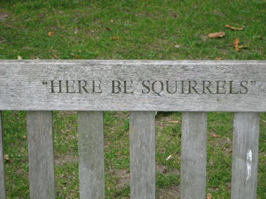

Thursday, January the 1st, 2009
back to: title, date or indexes
In homage to George Orwell's egg counting mania, I decided it would be an excellent idea to begin the new year by launching—to much fanfare, of course—Frank Key's Squirrel Count™. I can think of nothing that would excite readers quite as much as learning how many squirrels I have seen each day. So, to the sound of tooting horns and shrill whistle-blasts, with flags and banners flying, and perhaps some clowns cavorting upon a specially-built platform, here is the very first bulletin from Frank Key's Squirrel Count™ 2009.
01.01.09 Six squirrels, or possibly three squirrels each seen twice.
